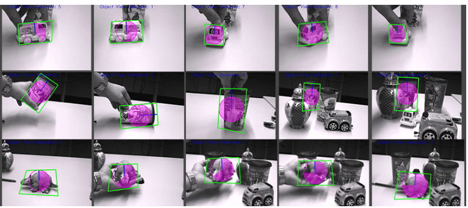
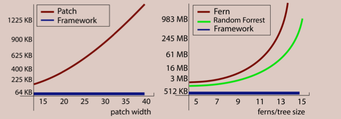
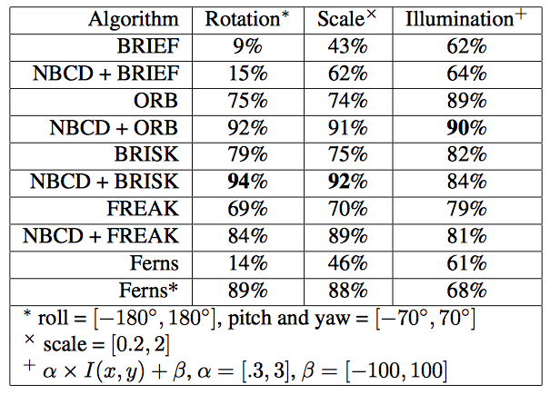
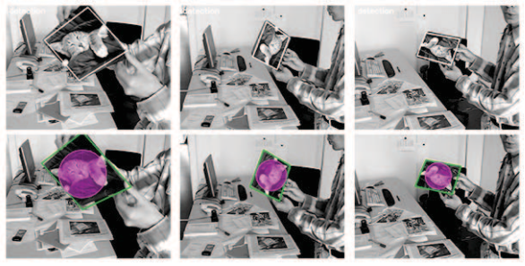
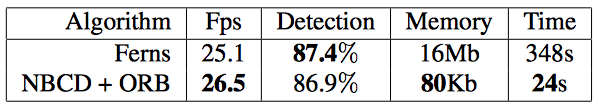
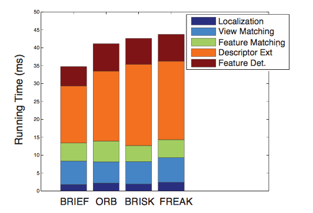
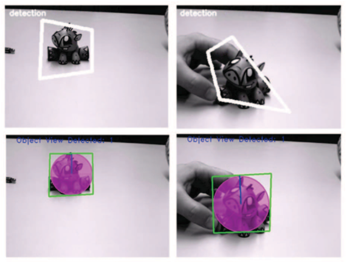
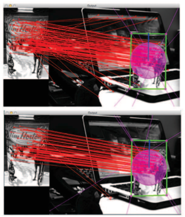

Fast Target Recognition on Mobile Devices
Graphical Abstract

Abstract
We present a real-time approach for 3D object detection using a single, mobile and uncalibrated camera. We develop our algorithm using a feature-based method based on two novel naive Bayes classifiers for viewpoint and feature matching. Our algorithm exploits the specific structure of various binary descriptors in order to boost feature matching by conserving descriptor properties (e.g., rotational and scale invariance, robustness to illumination variations and real-time performance). Unlike state-of-the-art methods, our novel naive classifiers only require a database with a small memory footprint because we store efficiently encoded features. In addition, we also im- prove the indexing scheme to speed up the matching process. Because our database is built from powerful descriptors, only a few images need to be ’learned’ and constructing a database for a new object is highly efficient.Media 1. Comparison betwen Ferns and our classifier plus more examples. The mousepad (i.e., single view object) needs around 16mb for the Ferns classifier to learn the model. The same example takes less than 80Kb with our classifier. The learning time for this example using the Ferns classifier takes 348s, our algorithm take 24s for this object. The car toy uses 8 views with a model size of less than 450Kb. The coffee cup uses 6 views with a model size of 340Kb. Each view contains ~200 keypoints.
Contributions
- Real-time 3D object detection using a single mobile and uncalibrated camera
- Combine binary descriptors with Naive Bayes classifiers for feature classification and matching
- Our classifier exploits the specific structure of binary descriptors to increase feature matching while conserving descriptor properties
- Small memory footprint due to efficiently encoded features
- Learning time is reduced because invariant features and descriptors
- Improved indexing scheme to speed up keypoint matching
Results
We compare our framework against Ferns and Binary Descriptors in terms of performance, memory usage, and running time. Our framework uses the binary descriptors’ implementations of OpenCV (i.e., BRIEF, ORB, BRISK, FREAK) with their default parameter configurations. The Ferns implementation was the authors’ from their web-page. We use it unmodified except for adapting their training intervals to show the impact of training on their solution and ours.First, we compare the memory usage between binary descriptors without a training phase for Ferns and our frame- work. It is easy to see that binary descriptors are the most compact with a memory usage of bits × K, where bits is the size in bits of the descriptor and K the amount of the keypoints in the database. On the other hand, the memory footprint of the Ferns database grows exponentially with the Ferns’size S, i.e., 2S × M × byteS × K, where M is the number of Ferns and byteS is the size of bytes used to store the conditional probabilities. The original Fern implementation uses S = 11, M = 30 and byteS = 4 (float). However, the memory needed for our database is 8 × bits × K, i.e., it is O(K) just as the binary descriptors. We use a byte to represent every bit of the descriptor. For example, 1000 keypoints using the BRIEF descriptor will require 31.25Kb for storage, Ferns will require 234Mb, and ours 250Kb. Or put differently, adding an extra keypoint to the Ferns database will require 240Kb, almost as much as another 1000 points in our representation.
 Figure 1. Memory usage for 1000 keypoints. Our solution is independent of the patch/tree/fern sizes.
Next, we evaluate the performance of each algorithm under different images transformations. We synthetically generate perspective transformations of the planar object at different scales and different positions in the image with changes in contrast and brightness. The background is filled with white noise.
 Table 1. Comparison of detection rates between matching with only binary descriptors, with Ferns and with our Naive Bayes Classified Descriptors (NBCD) when combined with binary descriptors. The detection rates were tested under random rotation, scale and illumination variations and averaged. The detection rates of Ferns are listed with similar training range to ours and in the line Ferns* with complete training.
  Figure 2. Comparison between Ferns and our framework (i.e., NBCD + ORB) for the mousepad example of Ozuysal et al. We compare speed (i.e., frame per seconds), detection rate, memory usage and construction time of the model.
 Figure 3. Running time of our framework using different binary descriptors. The running time is separated by keypoint detection, descriptor extraction, keypoint matching, view matching and localization of the object. Oour framework is independent of the keypoint extraction and descriptor selection.
Our framework detects non-planar 3D objects using the fundamental matrix to capture the geometric constraint between different views of the object. The objects are detected even if they are partially occluded and in different orientations.
 Figure 4. The planarity assumption in ferns does not perform well with more complex non planar objects (e.g., top images). The use of the fundamental matrix is stable and can be used with planar and non-planar objects.
 Figure 5. Our classifier is capable of creating a better classification that using the Hamming distance similarity measure. The matches in the top view are using Hamming distance (i.e., 118 matches: 92 inliers and 26 outliers). The bottom shows our classifier results with, i.e., 84 matches: 82 inliers and 2 outliers. All matches in both images have the same Hamming distance.